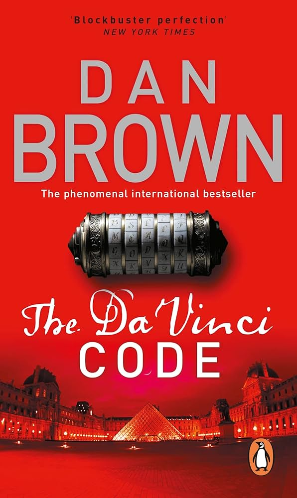

"The Da Vinci Code" by Dan Brown is a captivating thriller that
unravels a mystery spanning centuries. The story follows symbologist
Robert Langdon, who becomes entangled in a race against time to solve
a murder and decipher secrets hidden within the works of Leonardo da
Vinci.
The book delves into themes of art, history, religion, and symbolism
as Langdon follows a trail of clues left behind by the murdered curator
of the Louvre Museum in Paris. With the help of a cryptologist, Sophie
Neveu, Langdon discovers a hidden message that may lead to a secret that
could shake the foundations of Christianity.
As Langdon and Neveu navigate complex puzzles and historical enigmas, they
find themselves pursued by a secretive organization determined to protect
the ancient secret at any cost. The book takes readers on a thrilling
intellectual and spiritual journey, exploring the intersections of science,
art, and faith.
"The Da Vinci Code" is a masterfully crafted blend of fact and fiction,
weaving together historical references and conspiracy theories. It has become
an international phenomenon, captivating readers with its fast-paced plot,
thought-provoking ideas, and unexpected twists.
The book's success has also influenced the world of popular culture, inspiring
movies, video games, and scholarly debates. It remains a favorite among fans of
suspenseful thrillers and those interested in delving into the mysteries of history
and religion.
So, if you're looking for an engrossing read that seamlessly combines art, history,
and mystery, "The Da Vinci Code" is definitely a book to consider.
.jpg)